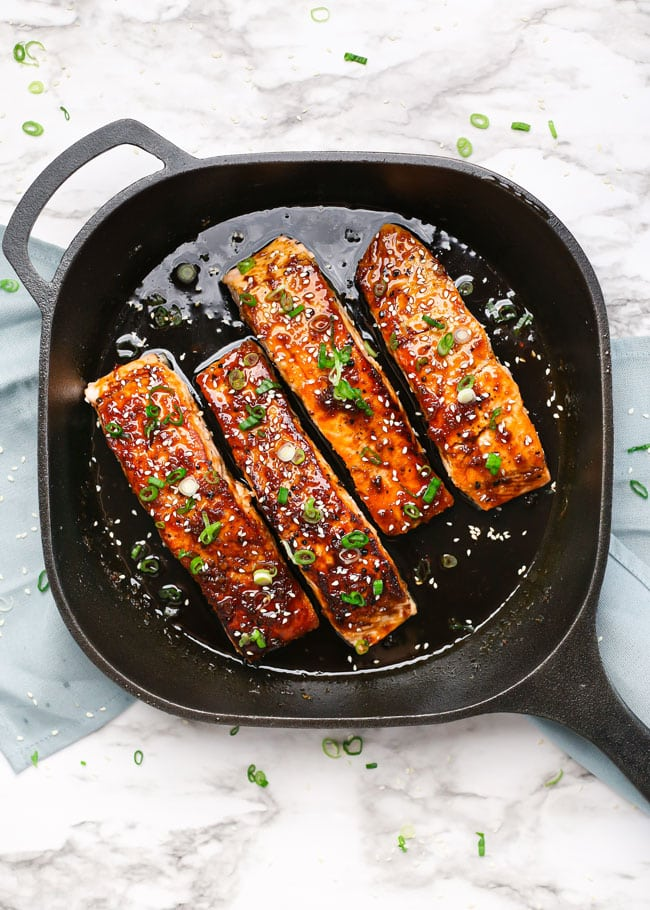

Maple Soy Glazed Salmons

Servings: 4
Calories: 415
Category: Main
Cuisine: Asian
Equipment
Ingredients
- 4-6 Salmon Filets
- 0.5 Tsp Salt
- 0.25 Tsp Pepper
- 1 Tbsp Sesame Oil
- 1 Tbsp Butter
- 2 Cloves Garlic Minced
- 1 Tsp Ginger Fresh
- 0.5 Cup Maple Syrup
- 3 Tbsp Soy Sauce Low Sodium
- Optional: Sesame Seeds
- Optional: Green Onion Chopped
Instructions
-
Season the salmon fillets on all sides with salt and pepper. Heat the sesame oil in a skillet over medium heat. Cook the salmon for 4-5 minutes per side, or until golden brown and completely cooked through.
- Remove the salmon from the skillet and set aside. Melt the butter in the skillet, then add the garlic and ginger. Sauté for 1 minute or until lightly browned.
- Pour the maple syrup and soy sauce into the skillet. Let the sauce bubble for 2-3 minutes, or until thickened slightly. It will thicken more as it cools off the heat.
- Remove the skillet from the heat and return the salmon to the pan. Spoon the sauce over the salmon fillets to coat them. Garnish with sesame seeds and green onion to serve.
Recipe Source: Nicole Beaulieu MITK
Home